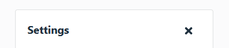
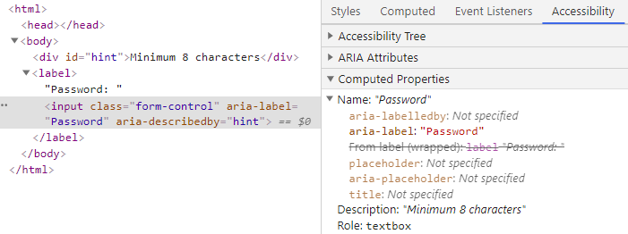
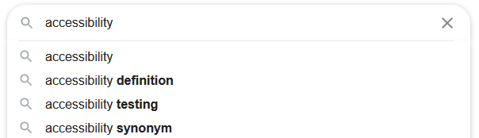

Accessible Web
Barrierefreies Internet
Dariusz Krolikowski
@darek_kay darekkay.comWhat?
Why?
How?
„Web Accessibility means that people with disabilities can use the Web.”
⇒ w3.org„... the site's content is available, and its functionality can be operated, by literally anyone .”
⇒ google.comRequirements
- Responsiveness
- Performance
- Security
- User experience
- SEO
- ...
- Accessibility
15% of the world’s population experience some form of disability.
⇒ The World BankLegal requirements
"Supreme Court hands victory to blind man who sued Domino’s over site accessibility"
Accessibility is "hard"

The cost of accessibility
- Knowledge
- Implementation
- Testing
Similar to: responsive design, performance, security, user experience, SEO, ...
How do I make my site more accessible?
Web Content Accessibility Guidelines (WCAG 2.1)
⇒ w3.org/TR/WCAG21/- Principles
- perceivable, operable, understandable, robust
- Guidelines
- Success Criteria
- 3 levels of conformance: A < AA < AAA
- Techniques
Different preconditions
- Motor disabilities
- Blindness / Low vision
- Deafness
- Cognitive disabilities
Keyboard navigation
Keyboard navigation
- Ensure a logical tab order
- Don't use
tabindex> 0 - Make all interactive elements focusable
- Don't remove the default focus ring
:focus {
outline: none; /* DON'T DO THIS */
}Do not depend on color

Color contrast
While grey on white is quite popular on the web, this text fails even AA level.


Screen reader
User interface for visually impaired people
Screen reader optimizations
- Use
semantic elements, e.g.:
<main>vs.<div id="main"><nav>vs.<div id="nav">
- Use
H1-H6semantically, not for styling - Simplify navigation
- Consider adding Skip links
- Provide page language in HTML
WAI-ARIA
Accessible Rich Internet Applicationsrole- button, dialog, list, tooltip, ...
- State
- aria-expanded, aria-disabled, ...
- Properties
- aria-haspopup, aria-label, ...
Custom components
- Prefer native over custom components
- Follow WAI-ARIA Authoring Practices
- No ARIA is better than wrong ARIA
Links vs. Buttons
- <a> - Link one file to another
- <button> - Trigger actions

Separate tags from their styling
Hiding elements
| Screen Reader | ||
| View | Visible | Hidden |
| Visible | - | aria-hidden="true" |
| Hidden | .sr-only |
display: none; |
.sr-only { /* From: Bootstrap 4 */
position:absolute; overflow: hidden;
width:1px; height:1px;
padding:0; border:0;
clip:rect(0,0,0,0); clip-path:inset(50%);
white-space:nowrap; }
Labels
All non-text content that is presented to the user has a text alternative that serves the equivalent purpose. — WCAG guideline 1.1.1
Missing or unassigned label
<label>Name</label>
<input id="html-label">
<!-- edit has auto complete blank -->
Assigned label
<label for="html-label">Name</label>
<input id="html-label">
<!-- Name edit has auto complete blank -->
Placeholders
<input placeholder="Name">
<!-- Name edit has auto complete blank -->
⇒ Bad user experience
Alternative texts
<img src="dog.jpg" alt="Dog playing in meadow.">
<img src="fb.png" alt=""> <!-- decorative image -->
ARIA attributes
<button>×</button>
<!-- × button -->
<button aria-label="Close">×</button>
<!-- Close button -->
<div id="close-id">Close</div>
<button aria-labelledby="close-id">×</button>
<!-- Close button -->
<div id="close-id">Close</div>
<button aria-describedby="close-id">×</button>
<!-- × button Close -->
Labels
- Use <label> for form elements
- Use alt for images
- Use aria-label if the label is not visible
- Use aria-labelledby if the label is visible
- Use aria-describedby for additional info

Live regions
- Announce dynamic/asynchronous changes
aria-live="polite|assertive"orrole="alert"(assertive)
<div id="live-region" aria-live="polite"></div>document.querySelector("#live-region")
.innerText = "8 search results loaded"Tools
accessibility
↓
a11y
axe-core
$ npm install -g axe-cli
$ axe example.com
Extensions/plugins available for: Chrome/Firefox, Cypress, Selenium, Storybook, ...
-
Lighthouse
(Chrome DevTools → Audits)
- Uses axe-core under the hood
-
Browser DevTools:

- eslint-plugin-jsx-a11y
Tools can detect only 20% to 50% of all accessibility issues.
Manual testing is always required.
Accessibility Review
- Tool-based testing
- Visual and Content testing
- Keyboard-only testing
- Screen reader testing
Resources
Accessibility doesn't just happen, you have to make it happen.
Accessibility is about equal treatment, not special treatment.
Thank you!
github.com / darekkay / presentations
Dariusz Krolikowski
@darek_kay darekkay.com